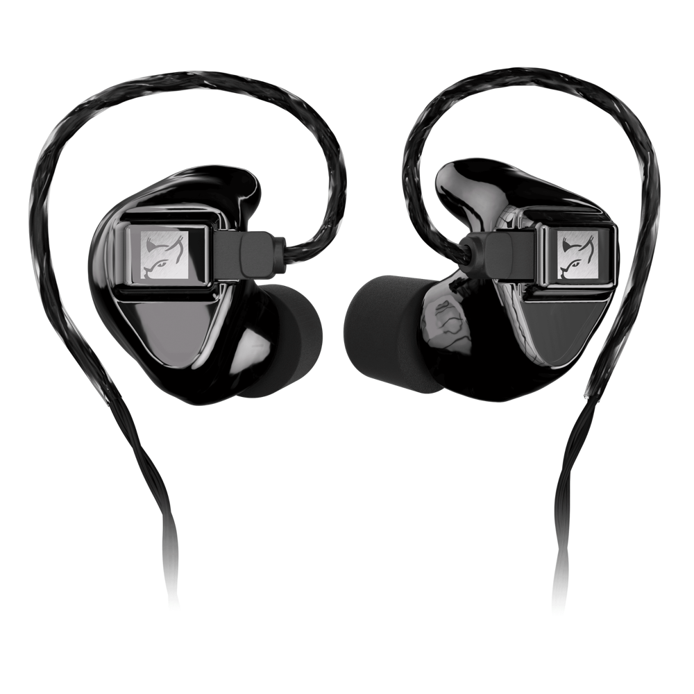
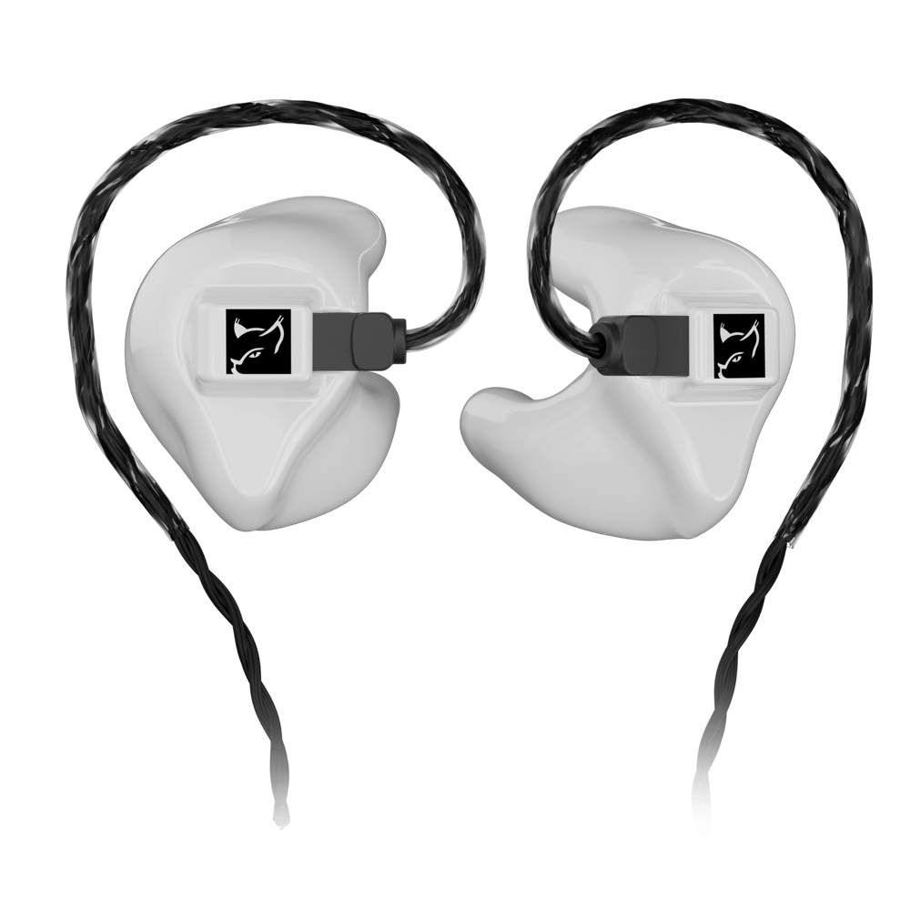
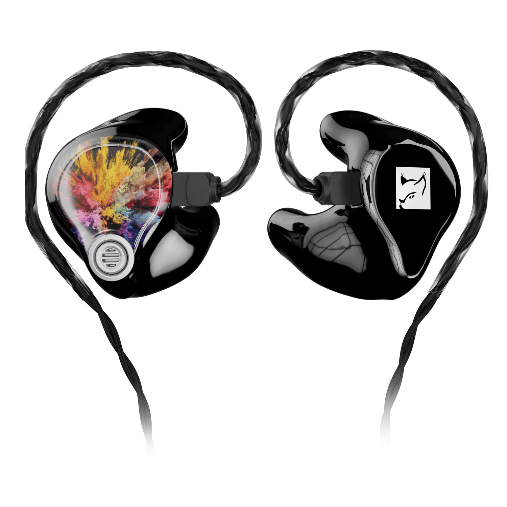
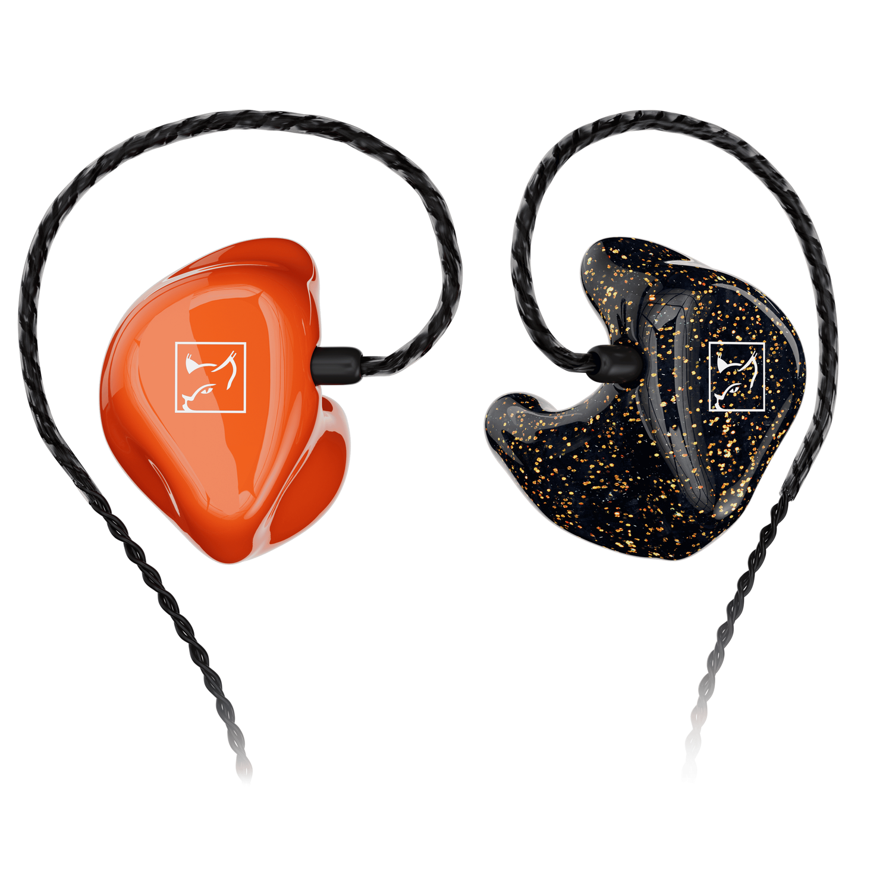

In-Ear Monitoring für den besten Sound
Custom In-Ears für Musiker, Gamer und Musikliebhaber.
Standard-Kopfhörer
Sofort einsatzbereit und in Standardgrößen — passen aber nicht in jeden Gehörgang gleich gut. Over-Ears lassen die Ohren schnell heiß werden.
Premium In-Ear Monitoring
- Perfekte Passform, maßgefertigt für jede Ohr-Anatomie
- Hoher Tragekomfort, auch bei längerem Tragen
- Perfekt für Musiker und Musikliebhaber
- Optimales Gaming-Erlebnis
- Extrem langlebig
Hörluchs® Custom In-Ears
Vier Serien für jeden Einsatz — maßgefertigt in Deutschland.

Hörluchs® HL4
Die universelle HL4-Serie bietet beeindruckenden Sound und eine einzigartige Optik.
Features
- 3D SMART-SURFACE
- 2-PIN-Kabel austauschbar
- Design-Faceplate optional
- Eigenes Design / Logo optional
- 7 hochpräzise Treiber-Optionen
- Silikon- und Memory-Foam-Domes
Einsatzbereich
ab 500 €
Hörluchs® HL5 Gaming
Der ultimative Klang-Profi für Gaming-Enthusiasten.
Features
- 3D SMART-SURFACE
- 2-PIN-Kabel austauschbar
- 2 hochpräzise Treiber, bassbetont
Einsatzbereich
ab 950 €
Hörluchs® HL5
Custom In-Ears mit optionalem Ambient-System.
Features
- 3D SMART-SURFACE
- 2-PIN-Kabel austauschbar
- Ambient-System optional
- Design-Faceplate optional
- Eigenes Design / Logo optional
- 7 hochpräzise Treiber-Optionen
- Silikon- und Memory-Foam-Domes
Einsatzbereich
ab 650 €
Hörluchs® HL6
Custom In-Ears aus weichem Silikon — höchste Abdichtung.
Features
- 3D Soft-Silikon
- 2-PIN-Kabel austauschbar
- 10 Farbvarianten
- 1-4 Wege Treiber-System
- Silikon- und Memory-Foam-Domes
Einsatzbereich
ab 689 €